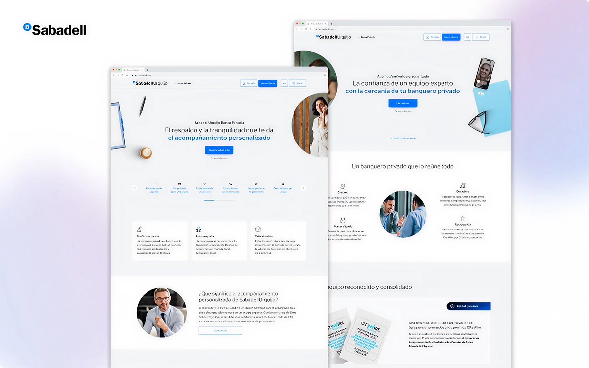
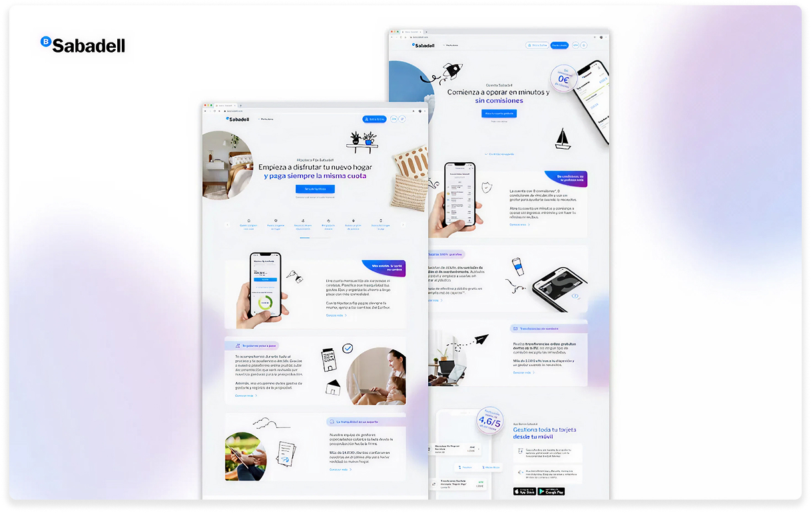
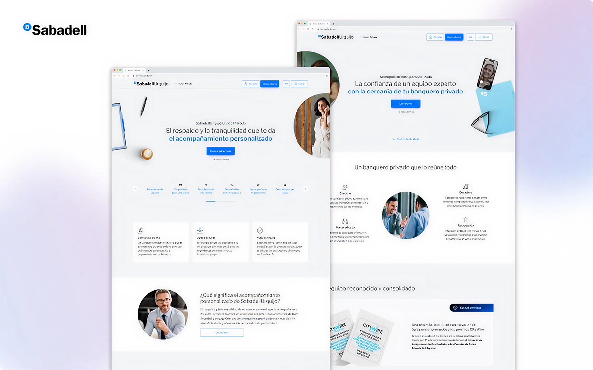
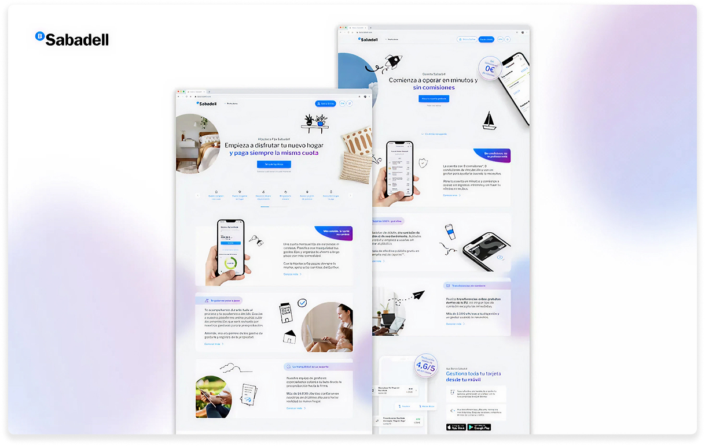
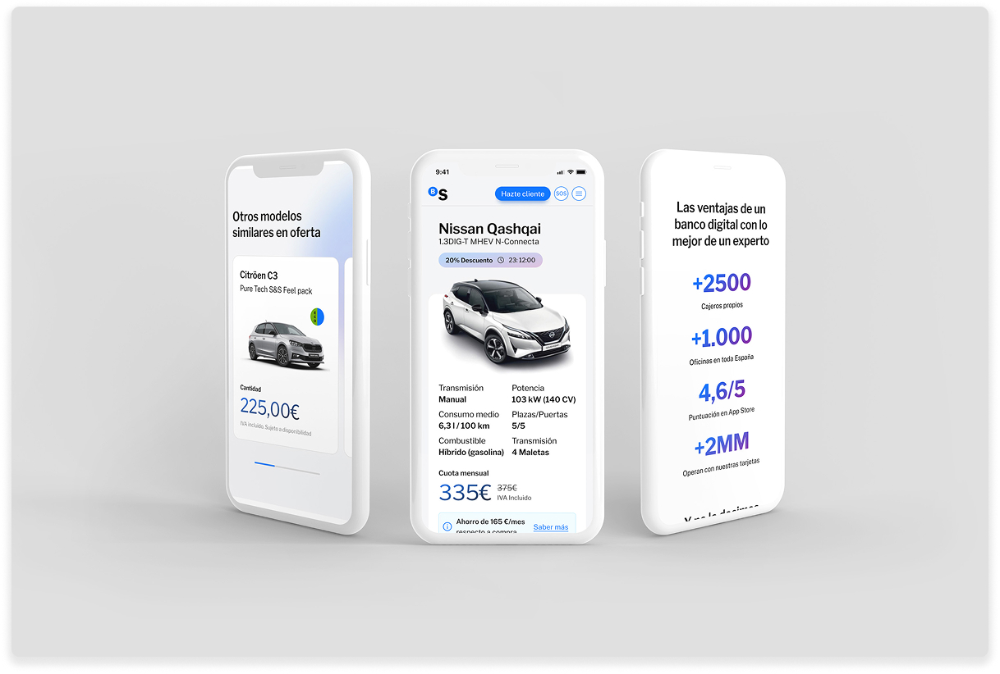
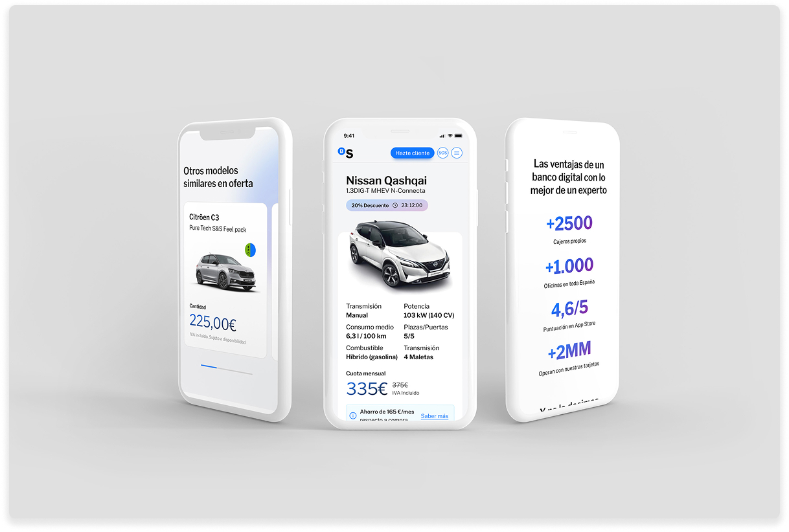

Banco Sabadell
Digital Banking Transformation + Galatea Design System
Overview
Banco Sabadell needed a modern digital banking transformation that unified retail and private banking segments. I built the Galatea design system from scratch and led the visual language, mobile-first experiences, and information architecture across both segments.
The transformation included responsive web platforms for retail and private banking, mobile banking apps, and a comprehensive design system that accelerated teams by 50% while improving conversion rates and lead generation.
Retail Web Platform
Responsive web experience for retail banking customers, focused on clear product stories, transparent pricing, and a smooth path from discovery to lead capture.
 



Private Banking
The goal was to make private banking feel premium and clear instead of overwhelming. The problem wasn’t “make it prettier” — it was structuring complex advisory services into journeys people could actually understand (and trust) across web and mobile.
Web experience
Dedicated web experience for high‑net‑worth clients, with tailored content and journeys that reflect the depth of services and advisory relationships.
Mobile experience
Mobile journeys for private banking clients, combining human advisory with digital self‑service so clients can review portfolios, get guidance, and reach their banker quickly.
Mobile Banking
Mobile‑first banking flows that cover core tasks like onboarding, cards, investing, and day‑to‑day money management, aligned with the new visual language.
 

Galatea Design System
Galatea is the design system built from scratch to serve both retail and private banking. It codifies typography, components, interactions, and templates so teams can ship faster without losing consistency.

Impact
Galatea has been adopted across 8 product teams, giving retail and private banking a shared foundation that teams can actually ship with. The system helped reduce design-to-development time by around 50%, while the new digital experiences drove measurable improvements in conversion and qualified lead generation.